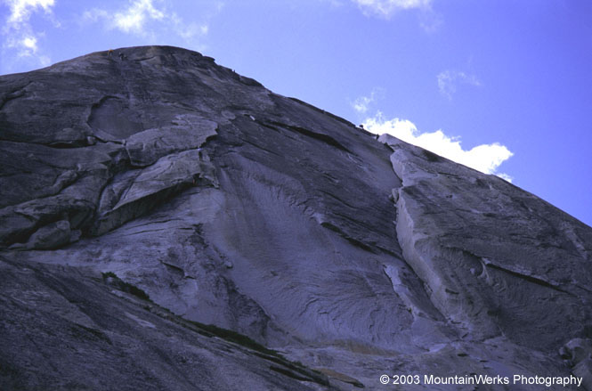
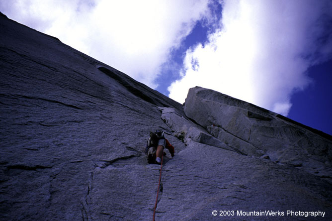
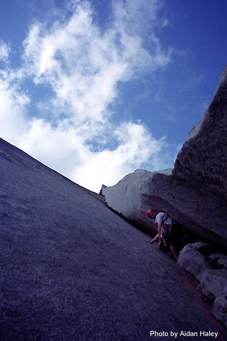
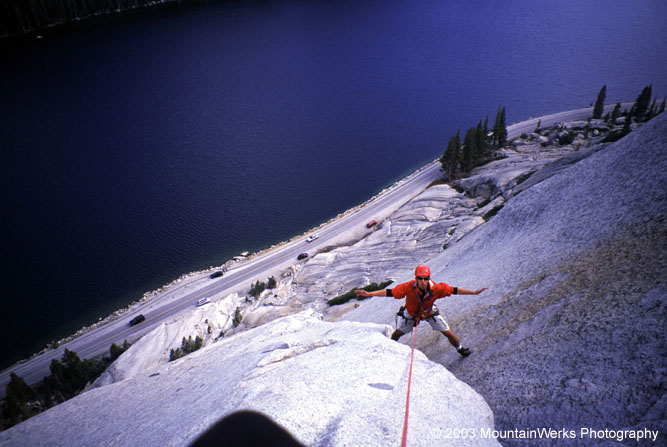
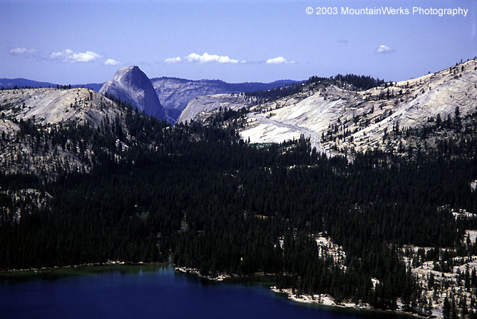

Great White Books
Great White Books (5.6 R, Grade II)
June 21, 2003
back to Sierras…
After climbing Daff Dome, we still had the afternoon free. We decided to finally visit Stately Pleasure Dome and climb an easy route. Aidan hiked up steepening slabs and ledges to reach the base of the climb. I followed but got distracted by a german father and daughter, who I had to practice my rusty skills with: “Wie geht’s, Krankenleute?” Okay, I didn’t really say “how’s it going SICKPEOPLE?” I just said “how’s it going?” They were really friendly, and they were amazed how I could walk up and down these slabs that they were crawling on, looking for holds. I forgot something at the car and I heard Aidan laughing at me from his high perch.
I finally arrived, wheezing, and put Aidan on belay. From his notes, he “climbed cool easy flake (only pro) to gain the start of the Books (huge chimneys/corners thus Books [nice]). Belayed at a block.” Access to the Haley Library and the generous endowment it provides has been crucial to this project. I don’t remember this pitch myself, as I was scaring myself about the next one.
It was the Book, the Business, the yawning chasm. Rated 5.6 and no pro. I laughed boldly at it’s dark embrace! “What was that noise?” said Aidan. “Um…that was me laughing boldly.”
I used classic chimney technique, moving slowly and with lots of energy expenditure. Occasionally I could rest my calf muscles by wedging with my knees on one wall and back on the other. The pitch was about 100 feet long, and near the end I got nervous about falling. I simultaneously wanted to sprint to the bolted anchor and crawl there carefully. This produced a sort of brain embolism which I still carry. I clipped in somewhat relieved.
Then Aidan arrived, somehow walking up the chimney without using his hands, and taking only 3 minutes. Now I couldn’t very well relate my story of battling with demons and greasy rock on that pitch! The next pitch had more of the same for Aidan, and I guess he felt the drama of the Books a little more on the sharp end from this journal entry: “…time time had some pro (relief).” He built a three-nut belay at the top of the Books and belayed me up.
I led up and right along a seam to a piton, then hard left on a long 5.5 traverse to easier ground and a belay. We coiled up the rope and scrambled down 3rd and 4th class slabs with a great view of Half Dome in the distance. This was a great 4 pitch climb, highly recommended.
</td>
<td width=”30%” valign=top>
|
 The Books are distinctive on the right |
|
 Aidan below the Books |
|
 Michael laughing boldly |
|
 He is such a showoff sometimes |
|
 Half Dome in the distance |
{kind=link}
{kind=link}
{kind=link}
{kind=link}
{kind=link}